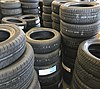

tire

Definition: A tire (North American English) or tyre (Commonwealth English except Canada) is a ring-shaped component that surrounds a wheel's rim to transfer a vehicle's load from the axle through the wheel to the ground and to provide traction on the surface over which the wheel travels. Most tires, such as those for automobiles and bicycles, are pneumatically inflated structures, which also provide a flexible cushion that absorbs shock as the tire rolls over rough features on the surface. Tires provide a footprint, called a contact patch, that is designed to match the weight of the vehicle with the bearing strength of the surface that it rolls over by providing a bearing pressure that will not deform the surface excessively.
Source: Wikipedia
Wikipedia Page
Wikidata Page
Occurs in: